Castel di Tusa: Einmal quer über die Insel an die Nordküste. Mittagessen direkt am Kiesstrand von Castel di Tusa, dazu Wein vom Fass.
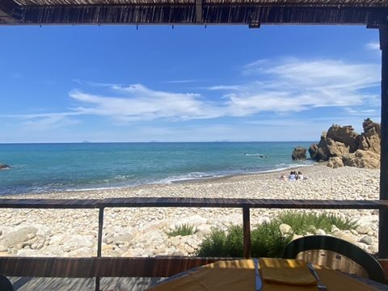
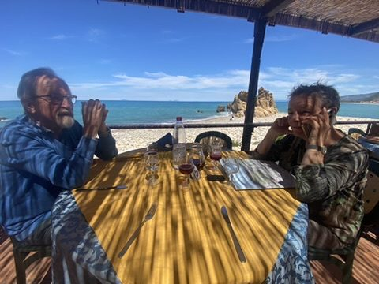
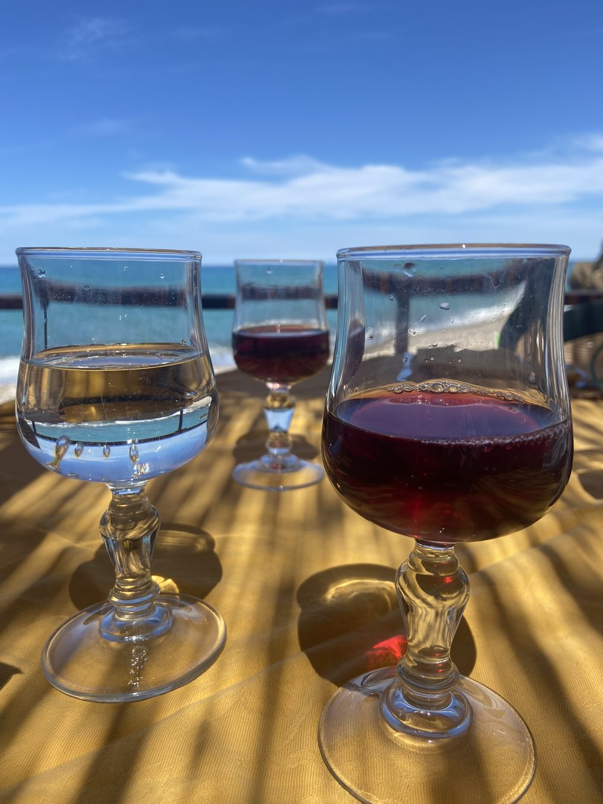
Castelbuono: Das Städtchen in den Madonie-Bergen entstand um die Burg der Ventimiglia, gebaut ab 1316. An der Piazza Margherita steht die Matrice Vecchia, die alte Mutterkirche aus dem 14. Jahrhundert, mit Fresken in der Krypta. Castelbuono ist außerdem bekannt für sein Gebäck und sein Eis.
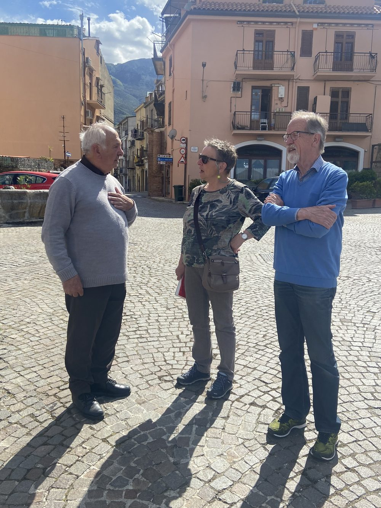
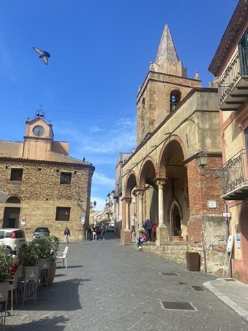
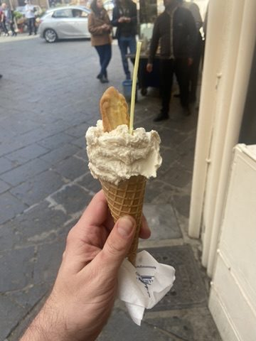
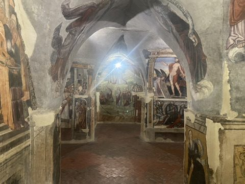
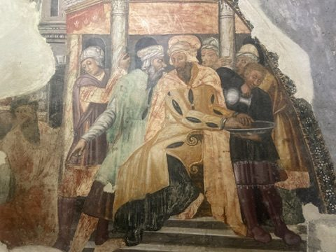
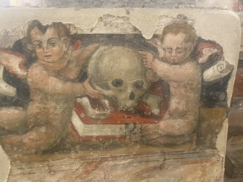
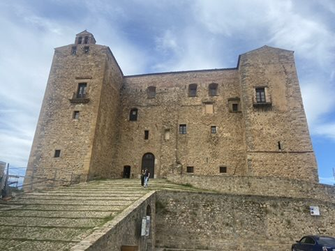
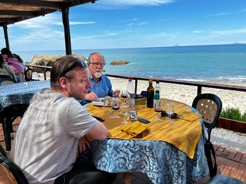